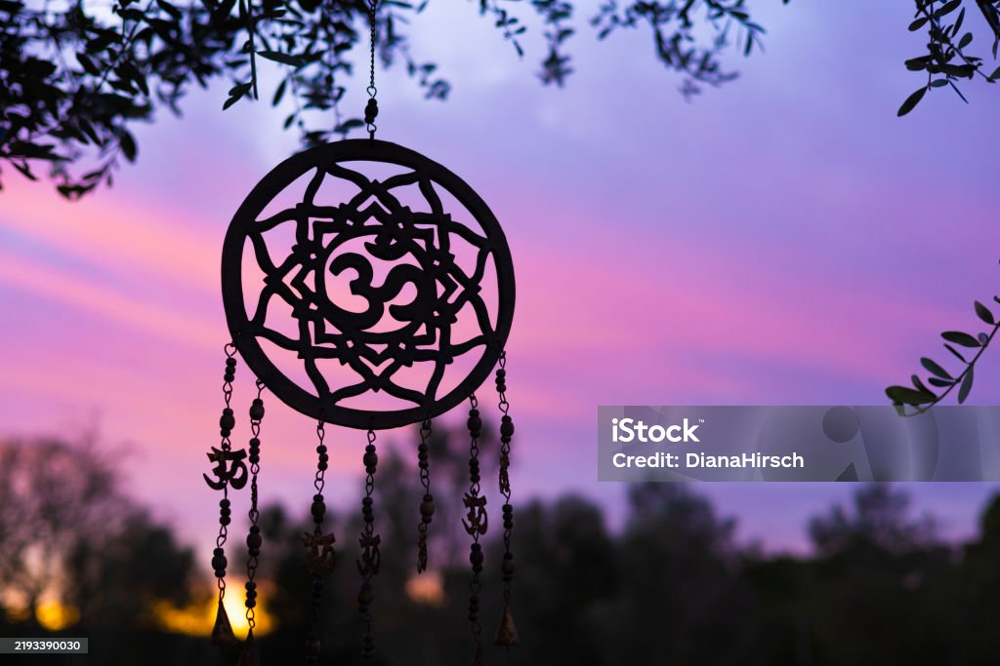

Hi, I’m Sharanya 👋
Welcome to my Sacred Travel Diary!
I love exploring spiritual and holy places across India.
This space is where I share my experiences, stories, and pictures from temples like Varanasi, Kedarnath, and Rameswaram.